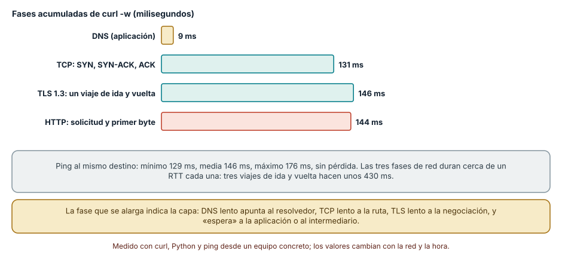
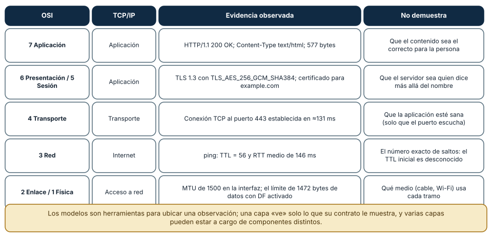
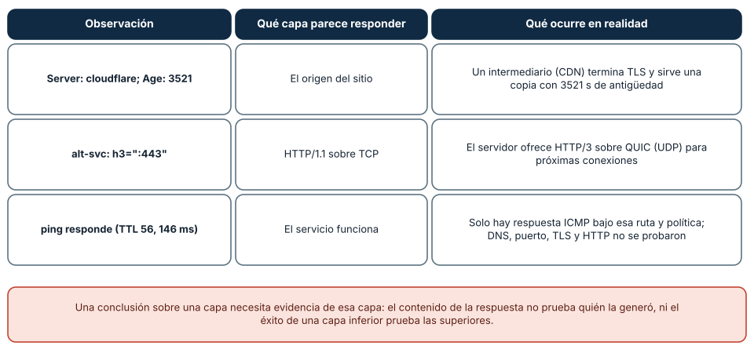

← SE-036 — Proyecto: kit de diagnóstico multiplataforma · ↑ Parte 03 · 📚 Índice completo · 🌐 Portal · SE-038 — Ethernet, Wi-Fi, direccionamiento y redes locales →
Punto profesional y fundamento pedagógico
Punto profesional. La clase existe para usar OSI y TCP/IP como modelos de localización de fallos, no como descripción literal del recorrido.
Por qué aparece aquí. Se sitúa después de Proyecto: kit de diagnóstico multiplataforma y antes de Ethernet, Wi-Fi, direccionamiento y redes locales: convierte el conocimiento anterior en una decisión observable que la clase siguiente podrá reutilizar. La continuidad se comprueba en el artefacto, no por compartir vocabulario.
Error conceptual que debe corregir. Asignar cada herramienta a una capa rígida o creer que una capa descarta las demás.
Secuencia de aprendizaje. Antes de leer la solución, el estudiante predice el resultado del caso normal y del error conceptual anterior. Luego explica un caso resuelto paso a paso, construye un contraejemplo que cambie la decisión y, sin consultar el texto, reconstruye el mecanismo y lo aplica a una entrada nueva. La secuencia usa predicción, explicación propia, contraste y recuperación. ICAP distingue participación de construcción de conocimiento; How People Learn II exige conectar conocimiento previo, contexto y transferencia; la práctica de recuperación respalda producir de nuevo la explicación tras una demora; y Education for Life and Work exige devolución que explique la causa del error.
Evidencia de aprendizaje. Layer-hypotheses.md con síntoma, capas candidatas y observación discriminante. Debe contener predicción previa, observación, explicación causal, contraejemplo, criterio de aceptación y una nota de qué dato haría cambiar la conclusión.
Límite de la conclusión. Los modelos simplifican implementaciones que atraviesan capas.
Trazabilidad fuente → afirmación
| Fuente primaria u oficial | Afirmación que respalda | Lo que no prueba |
|---|---|---|
| RFC 1122 — Requirements for Internet Hosts: Communication Layers | define la semántica normativa del protocolo nombrado en el título y sus límites interoperables | No demuestra por sí sola que el artefacto del estudiante sea correcto. |
| RFC 9110 — HTTP Semantics | define la semántica normativa del protocolo nombrado en el título y sus límites interoperables | No demuestra por sí sola que el artefacto del estudiante sea correcto. |
| RFC 8200 — Internet Protocol, Version 6 | define la semántica normativa del protocolo nombrado en el título y sus límites interoperables | No demuestra por sí sola que el artefacto del estudiante sea correcto. |
Antes de empezar
Esta clase continúa la petición observable de extremo a extremo de la Parte 3. No estudia redes como una lista de siglas: añade una decisión concreta al mismo recorrido y obliga a explicar dónde nace cada señal. Conserva una bitácora con cuatro columnas —hecho, interpretación, hipótesis rival y próxima prueba—; si una conclusión no apunta a evidencia, todavía no es diagnóstico.
Prerrequisitos
- Haber completado
SE-036o poder explicar su evidencia principal. - Trabajar solo contra
localhost, una red propia o un destino con autorización expresa. - Disponer de navegador,
curly herramientas equivalentes del sistema; registra versiones y plataforma.
Problema auténtico
Una persona informa que la petición observable de extremo a extremo «no abre». El navegador muestra un error, pero ese síntoma puede proceder del enlace local, la configuración IP, la resolución de nombres, el transporte, TLS o HTTP. Reiniciar el servidor sin distinguir esas fronteras mezcla causas incompatibles y borra evidencia.
Objetivos observables
Al terminar podrás:
- usar OSI y la suite TCP/IP como mapas de preguntas, no como una secuencia física literal;
- asociar cada unidad observable —trama, paquete, segmento o mensaje— con su alcance;
- separar encapsulación lógica de la implementación real del sistema operativo;
- construir una matriz síntoma–capa–prueba que descarte hipótesis;
- comunicar límites y una siguiente prueba sin presentar inferencias como hechos.
Mapa conceptual
Ver la notación fuente del diagrama
flowchart LR
I[Intento de comunicación] --> O[Observación localizada]
O --> H[Hipótesis y alternativa]
H --> P[Prueba discriminante]
P --> D[Decisión reversible]
D --> E[Evidencia para la siguiente clase]
P -->|no separa hipótesis| HEl ciclo evita el diagnóstico por intuición. La observación se ubica antes de interpretarse; la prueba debe producir resultados diferentes bajo hipótesis rivales; la decisión conserva una salida de recuperación. En esta clase la pregunta rectora es: ¿Cómo localizar la frontera responsable sin convertir las capas en una explicación ficticia?
Temas y por qué importan
| Núcleo | Pregunta de trabajo | Evidencia esperada |
|---|---|---|
| alcance | ¿dónde es válido este identificador o estado? | mapa de fronteras |
| mecanismo | ¿qué entrada produce qué transición? | secuencia comentada |
| garantía | ¿qué promete el protocolo y qué no? | ejemplo y contraejemplo |
| diagnóstico | ¿qué prueba separa causas plausibles? | comparación reproducible |
| operación | ¿cómo falla, se limita y se recupera? | caso sano, degradado y restaurado |
Conceptos y decisiones
1. Dos modelos, dos propósitos
OSI ofrece vocabulario fino para razonar sobre funciones; TCP/IP describe mejor la familia desplegada en Internet. No existe una correspondencia uno a uno: sesión y presentación suelen vivir dentro de protocolos o bibliotecas de aplicación. El modelo sirve si reduce el espacio de búsqueda; falla si se usa para afirmar que el software atraviesa siete cajas independientes.
2. Encapsulación y alcance
Una aplicación entrega bytes a transporte; transporte añade su información de control; IP permite avanzar entre redes; el enlace mueve la unidad sobre un tramo concreto. Cada salto puede reemplazar la cabecera de enlace mientras el datagrama mantiene su propósito extremo a extremo. Nombrar la unidad evita pedir una dirección MAC a un servidor remoto como si fuera global.
3. Plano de datos y plano de control
Los paquetes de una petición pertenecen al plano de datos. DNS, descubrimiento de vecinos, tablas de ruta y negociación producen o consultan estado de control. Que el plano de control funcione una vez no demuestra que el flujo posterior esté permitido ni que la ruta de retorno sea simétrica.
4. Síntoma, observación e inferencia
«Timeout» es una observación temporal; «el servidor está caído» es una inferencia. La prueba siguiente debe poder refutarla: resolver el nombre, abrir el puerto, completar TLS o recibir un estado HTTP. Una herramienta que salta capas puede confirmar disponibilidad global, pero no identifica por sí sola dónde apareció el retraso.
5. Las capas tienen fugas
MTU, proxies, NAT, aceleración de hardware y QUIC muestran que las fronteras interactúan. RFC 1122 advierte que la estratificación estricta es un modelo imperfecto. El diagnóstico profesional conserva el mapa, pero acepta evidencia cruzada y documenta en qué host y momento se observó.
Descomponer una petición real en fases
Un modelo de capas se vuelve útil cuando se aplica a una petición concreta. Con curl se puede obtener el tiempo *acumulado* hasta cada hito: curl -sS -o /dev/null -w "%{time_namelookup} %{time_connect} %{time_appconnect} %{time_starttransfer} %{time_total}\n" https://example.com. Los valores son acumulados desde el inicio, de modo que cada fase es la *diferencia* entre dos hitos. En cinco ejecuciones consecutivas desde un equipo con salida a Internet, el nombre se resolvió en 8 a 10 ms (el sistema ya lo tenía en caché), el handshake TCP tomó entre 131 y 159 ms, la negociación TLS 1.3 entre 142 y 149 ms, y la espera del primer byte entre 137 y 169 ms, para un total de 426 a 480 ms. Un ping al mismo destino dio un RTT mínimo de 129 ms, medio de 146 ms y máximo de 176 ms, sin pérdida. Cada fase de red dura *aproximadamente un viaje de ida y vuelta*: SYN y SYN-ACK en TCP, un viaje para la negociación TLS 1.3, y otro para la solicitud y la respuesta.

Cómo leer la figura. Cada barra es una fase obtenida por diferencia de tiempos acumulados. La lectura diagnóstica es comparativa: si el RTT es 146 ms y el handshake TCP dura 131 ms, la fase está en orden; si durara 900 ms habría pérdida o un camino anómalo. Dónde deja de valer: la medición es de un equipo y una ruta, con DNS ya en caché. Un primer acceso añadiría la resolución real (decenas de milisegundos), y con una conexión reutilizada (SE-045) TCP y TLS desaparecen de la petición. El mismo método se aplica a cualquier destino: se mide con *tu* red.
Los modelos como mapa de evidencias
OSI (siete capas) y TCP/IP (cuatro) no son descripciones literales de una implementación: son vocabularios para *ubicar una observación*. La Figura 2 asigna a cada capa un dato real de esa misma petición: el estado HTTP/1.1 200 OK y los 577 bytes pertenecen a la aplicación; la negociación TLS 1.3 con TLS_AES_256_GCM_SHA384 ocupa lo que OSI llama presentación y sesión; la conexión al puerto 443 es transporte; el TTL = 56 de la respuesta de ping es evidencia de red; y el MTU de 1500 bytes es del enlace. La columna final recuerda lo que cada observación *no* demuestra: el TTL no da el número de saltos porque se desconoce el valor inicial (los sistemas usan típicamente 64, 128 o 255); un puerto abierto no prueba que la aplicación esté sana.

Cómo leer la figura. Cada fila liga una capa con un dato y con su límite. Dónde deja de valer: TLS no encaja limpiamente en ninguna capa (OSI lo reparte entre presentación y sesión, y TCP/IP lo deja en la aplicación), y protocolos como QUIC combinan transporte, cifrado y flujos. Los modelos se usan para *ordenar preguntas*, no para decidir a qué capa «pertenece» un protocolo.
Cuando las capas filtran
La abstracción por capas tiene fugas, y las observaciones reales lo muestran. La respuesta de example.com incluyó Server: cloudflare y Age: 3521: no respondió el origen del sitio sino un intermediario (una CDN) que termina TLS y sirve una copia con 3521 segundos de antigüedad. La cabecera alt-svc: h3=":443" ofrece HTTP/3 sobre QUIC (UDP): la siguiente conexión puede ni siquiera usar TCP. Y un ping que responde solo demuestra una respuesta ICMP bajo esa ruta y política: no valida DNS, puerto, TLS ni HTTP.

Cómo leer la figura. La segunda columna es lo que parece responder y la tercera, lo que ocurre. Dónde deja de valer: son tres ejemplos de un sitio; otros no usan intermediarios y otros usan varios. El hábito que se conserva es preguntar «¿quién respondió realmente?» antes de atribuir un comportamiento a una capa o a un componente.
Definiciones de trabajo
- capa: agrupación conceptual de responsabilidades y servicios.
- encapsulación: adición de información de control alrededor de datos de una capa superior.
- PDU: unidad de datos nombrada según el protocolo observado.
- extremo: participante que origina o consume la comunicación.
- intermediario: componente que reenvía, transforma o almacena tráfico entre extremos.
Estas definiciones son operativas: precisan el uso dentro de la petición observable de extremo a extremo y deben leerse junto a las fuentes. No convierten un término histórico o dependiente de implementación en una garantía universal.
Ejemplo mínimo
Clasifica estas observaciones: DNS_PROBE_FINISHED_NXDOMAIN, Connection refused, certificado no válido y HTTP 503. Para cada una escribe la frontera más cercana, una prueba que la antecede y otra que la sigue. No afirmes causa todavía.
El ejemplo se acepta cuando incluye predicción previa, salida relevante y explicación de qué hipótesis descarta. Copiar una salida sin interpretación no demuestra comprensión.
Ejemplo profesional
La petición observable de extremo a extremo registra cuatro tiempos: resolución, conexión, negociación segura y primer byte. Si la resolución tarda 900 ms y las demás fases 20 ms, el equipo investiga el resolver antes de escalar al servicio. Si curl --resolve funciona, no «demuestra que Internet funciona»: aísla DNS conservando destino, TLS y HTTP.
La diferencia profesional es la trazabilidad: la decisión conecta requisito, mecanismo, señal, riesgo y recuperación. El equipo puede cambiar de herramienta sin perder el razonamiento.
Práctica guiada
- dibuja host cliente, red local, router, intermediario y origen.
- anota en cada frontera la unidad y el identificador observable.
- ejecuta una petición autorizada con
curl -vy conserva solo cabeceras no sensibles. - construye una tabla con observación, capa probable, hipótesis rival y prueba discriminante.
- explica qué parte del modelo no puede observarse con esa única herramienta.
- entrega
trace.mdcon comandos redactados, marcas de tiempo y condiciones de repetición.
Ejercicios
- Cálculo: con los tiempos acumulados 0,009 / 0,141 / 0,286 / 0,430 / 0,430 s, calcula la duración de DNS, TCP, TLS y espera, y di cuál se acerca a un RTT.
- Clasificación: asigna a una capa cada observación: «RST recibido», «certificado caducado», «TTL 56», «estado 503» y «MTU 1500», y declara qué no demuestra.
- Prueba que separa: diseña una medición que distinga resolvedor lento de ruta lenta sin cambiar de red.
- Fuga de capa: explica qué cambia en el mapa cuando el servidor anuncia
alt-svc: h3y el cliente lo usa.
Reto verificable
Entrega una traza comentada que permita a otra persona responder: qué se intentó, qué frontera se observó, qué garantía aplicaba, qué falló, qué alternativa fue descartada y cómo se restauró el estado. La persona revisora debe poder repetir al menos una prueba sin instrucciones orales.
Demostración guiada
- Predice el primer evento observable y el resultado sano.
- Ejecuta una sola petición de la petición observable de extremo a extremo y asigna cada marca a una frontera.
- Introduce el fallo controlado descrito abajo.
- Compara por primera divergencia, no por cantidad de errores posteriores.
- Restaura, repite y conserva evidencia de recuperación.
Una demostración que no incluye restauración solo prueba cómo romper el laboratorio.
Preguntas frecuentes
¿Es OSI o TCP/IP el modelo «correcto»?
Ninguno describe una implementación real con exactitud. TCP/IP refleja mejor los protocolos de Internet y OSI ofrece un vocabulario más fino (presentación, sesión) que sigue siendo útil. Se usa el que permita formular la pregunta diagnóstica, y se declara cuál.
¿Por qué los tiempos de curl -w son acumulados?
Porque cada variable mide desde el inicio de la operación hasta ese hito: time_connect incluye la resolución de DNS, y time_appconnect incluye la conexión TCP. La duración de una fase se obtiene restando el hito anterior; leerlos como duraciones separadas produce conclusiones erróneas.
¿El TTL me dice cuántos saltos hay hasta el destino?
No directamente. El TTL que recibes es el inicial del emisor menos los saltos recorridos, y el inicial es desconocido (a menudo 64, 128 o 255). Un TTL de 56 sugiere unos 8 saltos si el inicial era 64, pero es una inferencia; para ver la ruta se usa traceroute o tracert, con sus propios límites.
¿Un ping que responde demuestra que el servicio funciona?
No. Solo demuestra que hay una respuesta ICMP bajo esa ruta y política. No valida DNS, el puerto, TLS, HTTP ni la operación de negocio, y muchos sistemas bloquean o priorizan ICMP de forma distinta al tráfico de aplicación.
Fallo controlado y diagnóstico
Cambia temporalmente el nombre de destino por uno reservado e inexistente. Registra que no hubo conexión TCP ni petición HTTP; luego restaura el nombre y demuestra la transición. El aprendizaje es causal: una falla temprana impide observar capas posteriores.
Registra estado previo, acción, síntoma, primera divergencia, causa, corrección y estado posterior. Si la acción afecta red compartida, requiere privilegios amplios o no tiene rollback probado, reemplázala por una simulación local.
Una práctica reproduce la atribución por fase. Levanta un servidor HTTP local que espere 1 s antes de responder (por ejemplo, con python -m http.server modificado para dormir) y mide curl -w contra http://127.0.0.1:PUERTO/. Síntoma: el total supera 1 s. Hipótesis: DNS lento, ruta lenta o servidor lento. Prueba: descompón por diferencias: DNS y conexión quedan en milisegundos y la espera hasta el primer byte aporta el segundo completo. Conclusión: la lentitud está en la aplicación, no en la red. Repite contra un destino remoto y compara qué fase domina. Registra el comando, los valores acumulados y las diferencias en trace.md, y no concluyas desde una sola medición.
Errores comunes y cómo corregirlos
| Síntoma | Causa | Corrección |
|---|---|---|
| «La red es lenta» sin medir | Se atribuye el total a una capa sin descomponerlo | Obtener tiempos por fase y comparar con el RTT |
Leer time_connect como la duración del handshake | Los tiempos de curl -w son acumulados | Restar el hito anterior para obtener cada fase |
| Concluir saltos desde el TTL | Se desconoce el TTL inicial | Declarar la inferencia o usar traceroute con sus límites |
| «El puerto 443 abre, entonces el servicio funciona» | Se confunde transporte con aplicación | Comprobar TLS y una petición HTTP real, no solo la conexión |
| Atribuir una respuesta al origen | Un intermediario puede responder | Leer Server, Via, Age y comprobar quién respondió |
Entorno y archivos clave
work/SE-037/
├── README.md # alcance, autorización y reproducción
├── request.txt # petición sin credenciales
├── trace.md # línea temporal y evidencias
├── failure-report.md # hipótesis, prueba y recuperación
└── diagram.mmd # mapa accesible acompañado de textoLos archivos son contenedores, no evidencia automática. README.md declara sistema operativo, versiones, red utilizada y limpieza. Nunca confirmes cambios de red destructivos sin una ruta de recuperación.
Laboratorio integrado de la Parte 03
Ejecuta la suite de la petición observable y construye layer-hypotheses.md. Para cada evento indica modelo, frontera, evidencia disponible y una explicación rival. La rúbrica rechaza tanto asignar una herramienta a una capa rígida como afirmar que el modelo representa literalmente la implementación.
Seguridad, ética y accesibilidad
- captura únicamente tráfico propio o autorizado y durante la ventana mínima;
- redacta cookies, tokens, query strings, IP privadas y nombres de personas;
- no desactives TLS, firewall o aislamiento como solución permanente;
- acompaña color y diagramas con orden, etiquetas y una explicación textual;
- ofrece comandos equivalentes o resultados esperados para quien no pueda modificar una red;
- considera que telemetría e IP pueden identificar o perfilar personas.
Puente hacia el trabajo con agentes
Un agente que ejecuta curl o llamadas a servicios recibe errores como «timeout» o «connection failed» y tiende a reintentar o a concluir que «el servicio está caído». El método de esta clase exige otra cosa: que el harness entregue al agente los tiempos *por fase* y el código de error del sistema, y que el agente formule una hipótesis por fase antes de actuar. Una consulta a un servicio externo desde un agente es una petición con todas las fases de la figura 1, y cada fase debe tener su propio límite de tiempo. Además, lo que el agente lee de la red es un dato no confiable: una respuesta que contiene instrucciones no es una orden. Las partes de herramientas, observabilidad y seguridad agentic desarrollan estos controles.
Transferencia
Traslada el mecanismo a una segunda red o protocolo sin repetir comandos mecánicamente. Conserva la pregunta y el criterio de evidencia; cambia los supuestos de dirección, intermediación y política. Escribe qué observación seguiría siendo válida y cuál depende de la topología original.
Evaluación y evidencia
| Criterio | Evidencia mínima | Señal de dominio |
|---|---|---|
| modelo causal | mapa con fronteras y unidades correctas | explica interacción y fugas del modelo |
| protocolo | garantía y límite apoyados en fuente | distingue semántica de implementación |
| diagnóstico | hipótesis rival y prueba discriminante | encuentra primera divergencia |
| reproducibilidad | contexto, comandos y salida redactada | otra persona repite el resultado |
| responsabilidad | autorización, minimización y rollback | reduce riesgo sin borrar evidencia |
La clase no se aprueba por ejecutar comandos. Se aprueba cuando la evidencia sostiene las conclusiones y declara lo que todavía no puede saberse.
Fuentes
- RFC 1122 — Requirements for Internet Hosts: Communication Layers — define la semántica normativa del protocolo nombrado en el título y sus límites interoperables.
- RFC 9110 — HTTP Semantics — define la semántica normativa del protocolo nombrado en el título y sus límites interoperables.
- RFC 8200 — Internet Protocol, Version 6 — define la semántica normativa del protocolo nombrado en el título y sus límites interoperables.
Las RFC describen contratos de protocolo, no certifican una red, proveedor o herramienta. Cada afirmación de comportamiento local debe contrastarse con evidencia de ese entorno.
- curl: variables de
--write-out: definición de los tiempos acumulados (time_namelookup,time_connect,time_appconnect,time_starttransfer) usados en las figuras 1 y 2. - RFC 1122, Requirements for Internet Hosts y RFC 5737, direcciones de documentación: modelo de capas de Internet y rangos reservados para ejemplos.
- James Kurose y Keith Ross, *Computer Networking: A Top-Down Approach*, 7.ª edición (Pearson, ISBN 978-0-13-359414-0): modelos de capas, retardos y sus componentes.
Límites y siguiente paso
Los modelos no sustituyen la especificación de cada protocolo ni describen toda optimización del kernel o del hardware. La clase siguiente baja al primer alcance concreto: la red local.
Glosario
- capa: agrupación conceptual de responsabilidades y servicios.
- encapsulación: adición de información de control alrededor de datos de una capa superior.
- PDU: unidad de datos nombrada según el protocolo observado.
- extremo: participante que origina o consume la comunicación.
- intermediario: componente que reenvía, transforma o almacena tráfico entre extremos.
← SE-036 — Proyecto: kit de diagnóstico multiplataforma · ↑ Parte 03 · 📚 Índice completo · 🌐 Portal · SE-038 — Ethernet, Wi-Fi, direccionamiento y redes locales →